Рівномірний розподіл
Рівномірний розподіл - це розподіл
неперервних випадкових неличин, для яких кожен можливий
наслідок має рівні шанси для появи. Рисунок 3
показує графік рівномірного розподілу випадкової величини
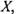
яка
рівномірно розподілена на інтервалі
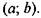
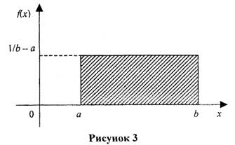
Ймовірність рівномірного розподілу
випадкової величини
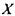
однакова для будь-якого наслідку.
Площа плоскої фігури, обмежена
графіком рівномірного розподілу, як і у випадку з
будь-яким законом розподілу неперервної випадкової величини, дорівнює 1
або 100%.
Однак площа прямокутника дорівнює добутку основи і
висоти, тобто
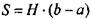
,
тому
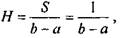
де
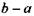
-довжина проміжку
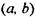
, розмах розподілу.
Випадкова величина
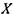
розподілена рівномірно у проміжку
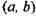
, якщо всі її можливі значення належать
цьому проміжку і диференційна функція
розподілу у цьому проміжку постійна, тобто
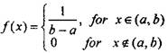
Числовими характеристиками рівномірно розподіленої величини
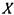
будуть
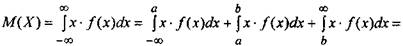
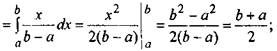
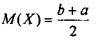
(25)
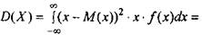
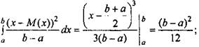
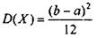
(26)
Наприклад, нехай середня вага банки з фруктами, що виробляється компанією, дорівнює 16 унцій.
Реальна її вага, що варіюється від 14,5 до 17,5 унцій, задовольняє
рівномірному розподілу, графік якого подано на Рис. 4.
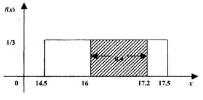
Рисунок 4
Тоді, математичне сподівання
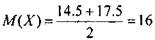
унцій та
висота прямокутника
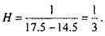
Менеджер компанії бажає визначити
ймовірність, що вага навмання взятої банки з фруктами належить інтервалу (16;
17,2) (унцій). Шукане значення ймовірності дорівнює заштрихованій
частині площі фігури, зображеній на Рис. 4 і
може бути визначеним двома способами.
Перший спосіб - геометричний. Площа заштрихованої
частини дорівнює
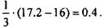
Отже, ймовірність,
що вага навмання взятої банки з фруктами належить інтервалу (16; 17,2) унцій,
дорівнює 40%.
Другий спосіб полягає у використанні
формули ймовірності влучення рівномірно
розподіленої випадкової величини X й інтервал
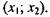
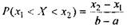
(27)
В нашому випадку
це становить
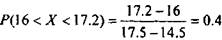
Середнє
квадратичне відхилення рівномірно розподіленої випадкової
величини X дорівнює
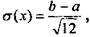
(28)